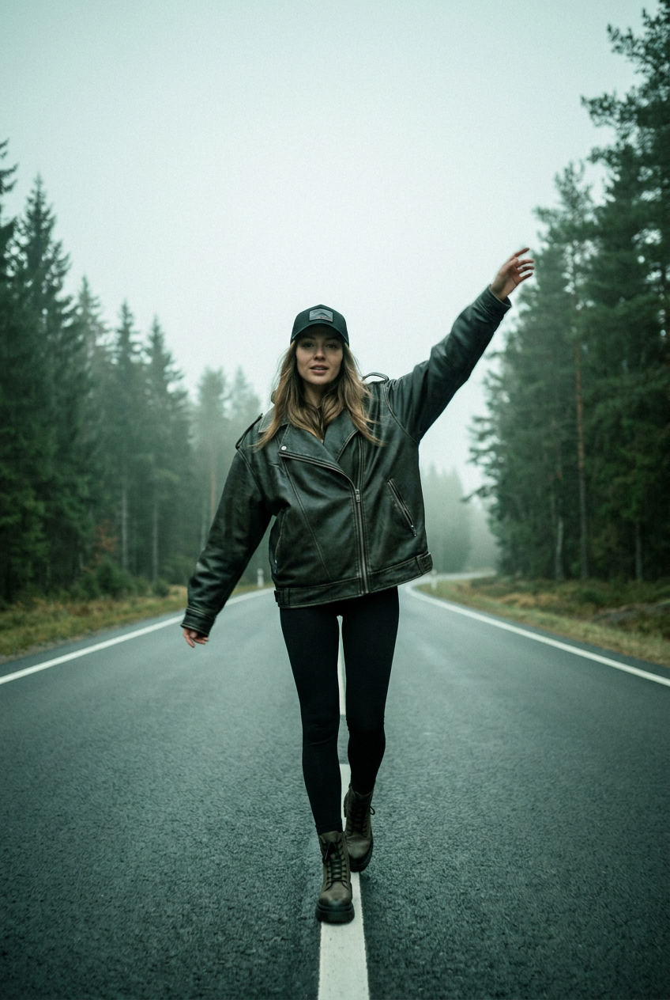
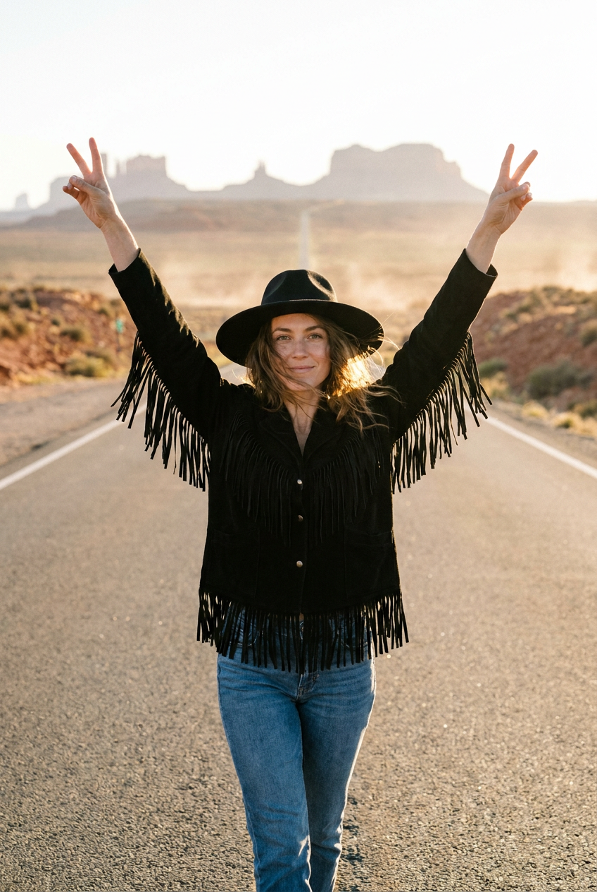
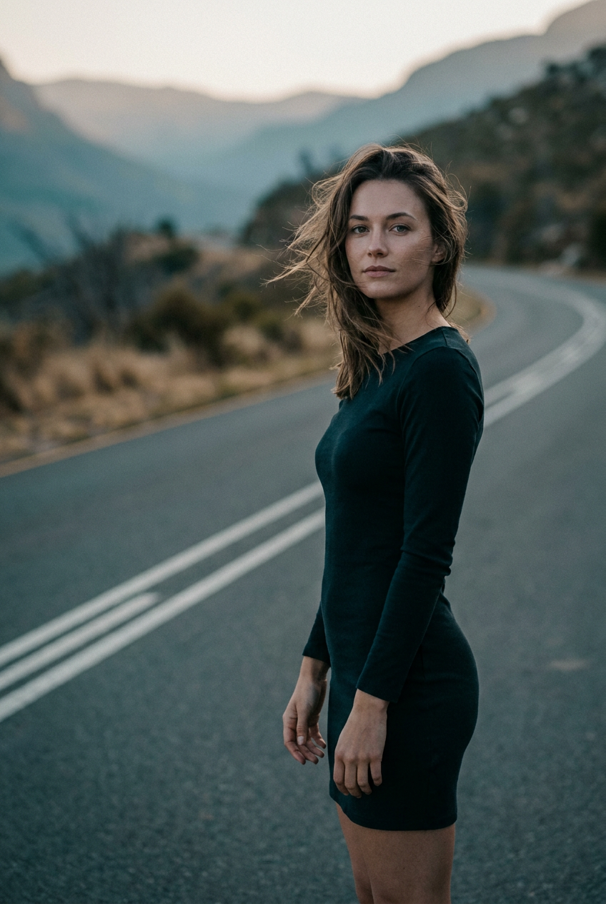
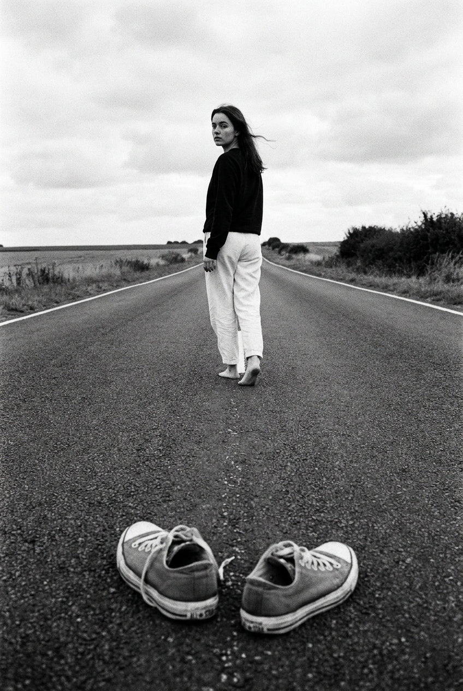
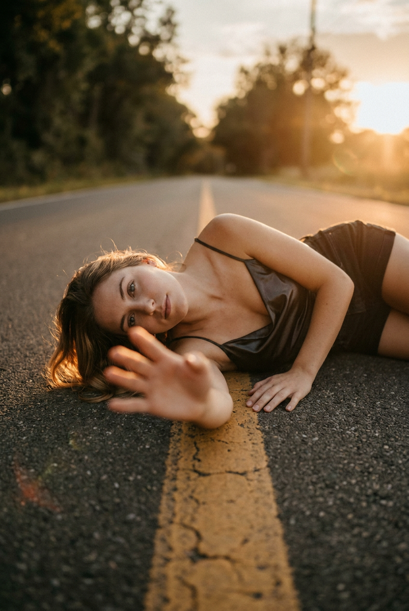
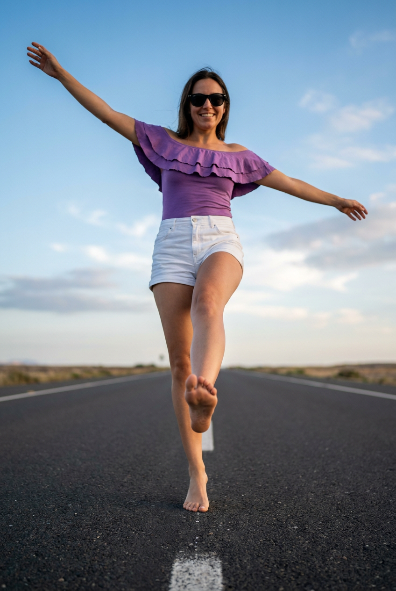
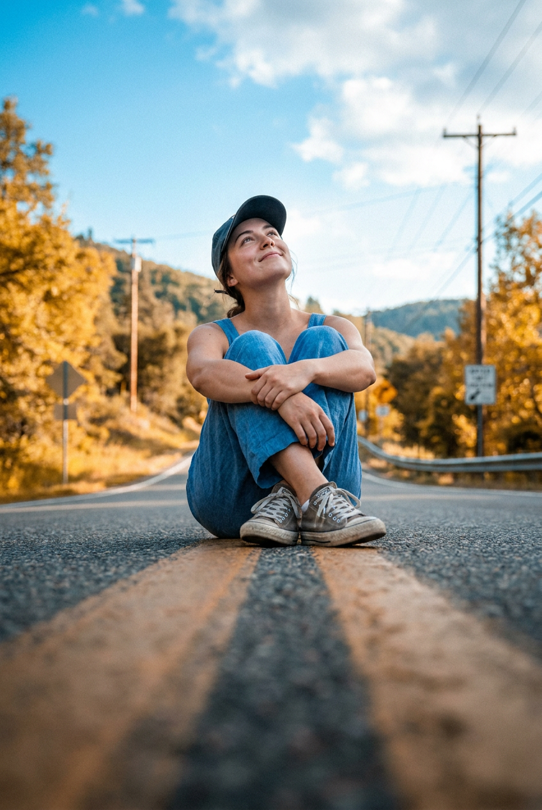
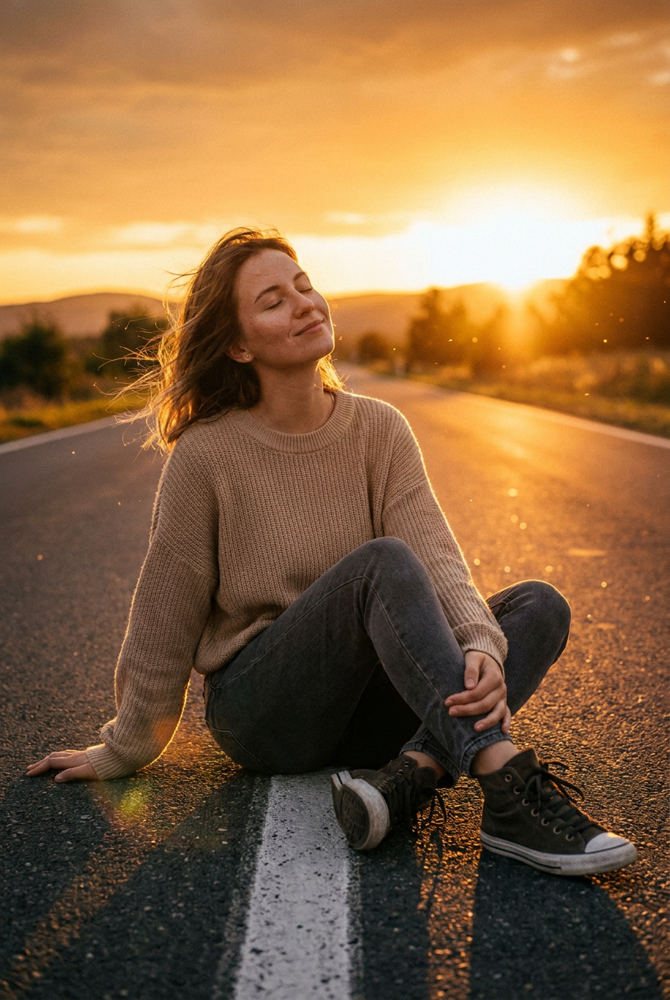
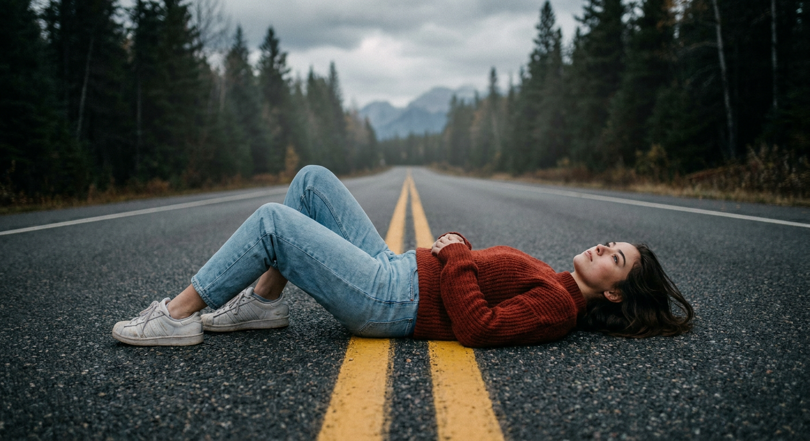

ИИ-фотосессия на дороге: 9 промптов для нейросети

Снимки на дороге часто выглядят скучно: модель теряется в кадре, разметка ломает композицию, а нейросеть меняет лицо и путает руки. Генерация помогает собрать выразительную сцену без трассы, фотографа и долгих поисков подходящего света.
В подборке — 9 сценариев для вертикальной ИИ-фотосессии: прогулка по шоссе, низкий ракурс, чёрно-белый нуар, сидячие позы, съёмка с движением и романтичный кадр на солнце.
Как сгенерировать такое фото: пошагово
Нужен снимок анфас при ровном свете, лицо в кадре целиком, без тёмных очков и головных уборов. Разрешение от 1000 пикселей по короткой стороне. Чем чётче исходник, тем точнее модель повторит черты.
Выберите сценарий ниже и нажмите «Копировать» — текст уйдёт в буфер целиком, вместе с командой сохранения внешности. Эта команда стоит первой строкой и отвечает за то, чтобы на выходе было ваше лицо, а не случайное.
Кнопка «Сгенерировать» рядом с каждым промптом открывает модель в новой вкладке. Nano Banana Pro работает с референсом лица — в отличие от моделей, которые генерируют портрет с нуля и узнаваемость теряют.
Промпт — в поле ввода, портрет — через загрузку референса. Порядок значения не имеет, но без референса команда сохранения внешности работать не будет: модели нечего сохранять.
Для сторис и ленты берите 9:16, для превью и обложек — 4:3. Первый результат редко идеален: если поза или свет ушли не туда, поправьте соответствующую часть промпта и запустите заново. Обычно хватает двух-трёх итераций.
9 промптов для генерации
1. Шаг навстречу камере
Строго сохранить внешность по загруженному референсу: черты лица, пропорции, мимику и текстуру кожи без изменений. Вертикальная кинематографичная фотография в винтажной плёночной эстетике, фотореалистичная кожа и мягкое зерно. Девушка с лицом по загруженному референсу идёт по пустой асфальтовой дороге прямо навстречу камере. Белая центральная разметка и светлая боковая линия уходят к горизонту, создавая глубокую перспективу. Она смотрит в объектив или немного выше него, выражение спокойное и уверенное. В момент шага одна рука поднята вверх и в сторону, будто девушка ловит мгновение или широко приветствует кого-то; вторая свободно опущена вдоль тела. Добавить лёгкий flow движения: края одежды и пряди волос слегка размыты, лицо остаётся резким. Натуральные черты, аккуратные брови, выразительные глаза, естественная мимика. Вертикальный кадр 4:5, объектив 50 мм, мягкий дневной свет, реалистичная фактура ткани и дороги.
2. Победа посреди шоссе

Строго сохранить внешность по загруженному референсу: черты лица, пропорции, мимику и текстуру кожи без изменений. Фотореалистичный вертикальный кадр в киношной travel-эстетике. Девушка с лицом по загруженному референсу идёт по центру совершенно пустого шоссе навстречу зрителю и делает шаг вперёд. Обе руки подняты над головой в радостном жесте победы или приветствия, плечи раскрыты, поза свободная и уверенная. Она смотрит прямо в объектив, на лице лёгкая улыбка. Волосы развеваются на ветру, кожа выглядит натурально, без пластиковой ретуши. На голове широкополая чёрная шляпа с высокой тульей, похожая на федору или канотье; мягкая тень от полей ложится на лоб, но не скрывает глаза. Одежда чёрная: верх, короткая куртка или пончо с бахромой и фактурными деталями на рукавах и по бокам. Пустая дорога уходит к горизонту, дневной свет, реалистичные тени, вертикальный формат 4:5, объектив 35 мм.
3. Взгляд через плечо

Строго сохранить внешность по загруженному референсу: черты лица, пропорции, мимику и текстуру кожи без изменений. Фотореалистичная кинематографичная фотография в вертикальной композиции, от пояса до полного роста. Девушка с лицом по загруженному референсу стоит на асфальтированной горной трассе ближе к правой стороне переднего плана. Корпус развёрнут немного боком, голова повернута к камере, взгляд прямой, спокойный и слегка задумчивый. Руки естественно опущены вдоль тела, без напряжения. Волосы чуть растрёпаны ветром, кожа имеет настоящую текстуру, макияж лёгкий, губы натурального оттенка. На девушке тёмное чёрное короткое платье либо облегающий комбинезон-мини с длинным рукавом; матовая ткань сидит ровно по фигуре, видна её фактура. На ногах тёмная обувь. На фоне — горная дорога, уходящая между склонами, чистый воздух и мягкий рассеянный свет. Вертикальный кадр 4:5, объектив 85 мм, умеренно размытый фон.
4. Нуарная дорога вдаль

Строго сохранить внешность по загруженному референсу: черты лица, пропорции, мимику и текстуру кожи без изменений. Вертикальная чёрно-белая фотография в духе film noir и винтажной плёнки, сильный контраст, заметная фактура зерна. Камера лежит очень низко, почти на уровне асфальта. На переднем плане крупно видны кеды, стоящие на дороге без человека, с лёгким размытием. Прямая белая разметка образует ведущие линии и собирает взгляд в далёкой точке горизонта. В центре перспективы по дороге идёт девушка с лицом по загруженному референсу. Она делает шаг вперёд, но оборачивается через плечо: голова и верх корпуса повернуты назад, взгляд направлен прямо в объектив. Лицо различимо даже на расстоянии, выражение спокойное, немного загадочное. Длинная дорога, высокий контраст света и тени, глубокие серые тона, драматичная атмосфера старого кино. Вертикальный формат 4:5, объектив 28 мм, низкая точка съёмки, реалистичная плёночная резкость.
5. Пауза посреди дороги

Строго сохранить внешность по загруженному референсу: черты лица, пропорции, мимику и текстуру кожи без изменений. Кинематографичная фотореалистичная сцена на пустой асфальтированной дороге. Девушка с лицом по загруженному референсу сидит в центре кадра и обеими руками обнимает колени. Одна нога согнута перед собой, вторая чуть подогнута под тело; ноги направлены к камере и располагаются вдоль дорожной линии. Голова немного повернута в сторону, взгляд задумчивый, выражение мягкое и отстранённое. На ней свободная белая рубашка или белое платье с рукавами, ткань слегка собрана у запястий. На ногах белые кроссовки с аккуратно завязанными шнурками. На запястье тонкий ремешок или браслет без логотипов, рядом может лежать лёгкий рюкзак. Дорога уходит к горизонту, дневной свет мягкий, кожа и ткань выглядят натурально. Вертикальный кадр 4:5, объектив 50 мм, фокус на лице, умеренное размытие фона.
6. Рука тянется к зрителю

Строго сохранить внешность по загруженному референсу: черты лица, пропорции, мимику и текстуру кожи без изменений. Фотореалистичная киношная фотография в вертикальном формате. Девушка с лицом по загруженному референсу лежит поперёк асфальтовой дороги, тело вытянуто в ширину кадра, ноги слегка согнуты в коленях. Голова повернута к камере, лицо остаётся в резком фокусе; выражение спокойное, мимика нежная, взгляд направлен прямо или чуть в сторону объектива. Ближняя рука вытянута вперёд к зрителю и создаёт сильное размытие движения на переднем плане, будто девушка пытается дотянуться до камеры. Вторая рука согнута и лежит рядом с корпусом. Под телом и частично под рукой проходит центральная жёлтая дорожная линия. Реалистичная кожа, отдельные волосы, естественная ткань без пластикового блеска. Добавить кинематографичный дневной свет, мягкую глубину резкости, объектив 35 мм, вертикальный кадр 4:5, лёгкий motion blur только на ближней руке.
7. Шаг в низком ракурсе

Строго сохранить внешность по загруженному референсу: черты лица, пропорции, мимику и текстуру кожи без изменений. Фотореалистичная street/travel-фотография с мягкой плёночной цветокоррекцией, вертикальная композиция и высокая детализация. Пустая асфальтированная дорога уходит к горизонту, в кадре видна белая центральная или краевая разметка. Камера установлена очень низко, почти на уровне этой линии, поэтому дорожное полотно выглядит длинным и направляет взгляд к девушке. Она находится в центре и идёт навстречу объективу либо параллельно направлению разметки; одна нога поднята в шаге, другая уверенно опирается на асфальт. Руки двигаются естественно и слегка расслаблены, поза живая, не постановочная. Волосы немного развеваются, лицо по загруженному референсу, натуральная кожа, реалистичная фактура одежды. Фон слегка размыт, но линия дороги читается. Вертикальный формат 4:5, объектив 24 мм, низкая перспектива, мягкий дневной свет, без мультяшности.
8. Мечтательность у обочины

Строго сохранить внешность по загруженному референсу: черты лица, пропорции, мимику и текстуру кожи без изменений. Фотореалистичная вертикальная киношная фотография с камерой почти на уровне асфальта. В переднем плане крупно и размыто видна дорога, диагональные линии полотна ведут взгляд к девушке, сидящей у края проезжей части. Она подтянула колени к груди и обхватила их руками, корпус слегка откинут назад. Голова поднята, лицо направлено к небу или в сторону солнца, выражение спокойное, мечтательное, с мягкой улыбкой. Девушка с лицом по загруженному референсу, натуральная кожа и волосы, без эффекта пластика. На ней аккуратный светлый образ: детали одежды должны выглядеть реалистично и чисто, без логотипов. Солнце создаёт тёплый контровой свет, по краям волос заметно лёгкое свечение. Фокус на лице и фигуре, передний план и дальний фон уходят в малую глубину резкости. Вертикальный кадр 4:5, объектив 35 мм, диафрагма f/2.
9. Солнечная пауза на разметке

Строго сохранить внешность по загруженному референсу: черты лица, пропорции, мимику и текстуру кожи без изменений. Портретная фотография в вертикальном кадре: девушка с лицом по загруженному референсу сидит на асфальтовой дороге рядом с белой разметкой, в центре композиции. Поза расслабленная и романтичная: она полулежит или сидит на коленях, ноги согнуты, корпус немного откинут назад. Голова повернута к солнцу, глаза закрыты или полуприкрыты, на лице спокойствие и мягкая улыбка. Одна рука касается земли или колена, вторая лежит на колене. Волосы растрёпаны ветром, отдельные пряди заметны в тёплом свете. Натуральный макияж, тёплый тон кожи, реалистичная текстура волос. На девушке свободный светлый вязаный или трикотажный свитер бежевого либо молочного оттенка, тёмные или серо-голубые брюки/джинсы и высокие кеды. Дорожная линия уходит в перспективу, мягкий солнечный flare, объектив 50 мм, f/2.8, вертикальный формат 4:5.
Что важно учесть в этом стиле
Дорога сама по себе уже задаёт композицию: разметка, обочина и края полотна работают как ведущие линии. Если нужна глубина, укажите низкую точку съёмки, направление линий и точку схода у горизонта. Для портрета лучше выбрать объектив 50–85 мм, для выразительной перспективы — 24–35 мм.
Отдельно описывайте резкость и движение. Формулировка «лицо в фокусе, лёгкий motion blur на руке или волосах» обычно срабатывает точнее, чем общее «динамичный кадр». Для сходства с референсом полезно повторять естественную мимику, пропорции лица и текстуру кожи, но не перегружать запрос десятками взаимоисключающих деталей.
Идеи для вариаций
- Замените дневной свет на синий час после заката и добавьте холодные тени.
- Попросите съёмку после дождя: мокрый асфальт, отражения разметки и редкие капли на одежде.
- Перенесите сцену на пустую серпантинную дорогу с туманом между горами.
- Сделайте кадр на рассвете с длинными тенями и золотистым контровым светом.
- Добавьте старый дорожный указатель без читаемого текста и винтажный автомобиль на дальнем плане.
- Поменяйте плёночную обработку на газетный чёрно-белый стиль с жёсткой вспышкой.
Как собрать свой промпт
Сначала задайте формат и жанр: вертикальная фотография 4:5, документальная съёмка, travel или film noir. Затем опишите место, положение камеры и главную линию композиции. После этого добавьте действие модели, направление взгляда, выражение лица, одежду и обувь.
В финале укажите свет, глубину резкости и нежелательные артефакты: лишние пальцы, деформированные кисти, нечитаемые лица, логотипы и пластиковую кожу. Если генератор поддерживает параметры, начните с разрешения 1024×1280, 4–8 вариантов и одного референса лица, а затем уточняйте лучший результат отдельными правками.
Ошибки, из-за которых кадр не получается
- Слишком много действий. Когда модель одновременно идёт, прыгает, машет обеими руками и оборачивается, нейросеть часто ломает анатомию. Оставьте один главный жест.
- Не задана точка съёмки. Без низкого ракурса дорога теряет масштаб, а без фокусного расстояния перспектива может стать случайной.
- Размыто всё изображение. Уточняйте, что motion blur нужен только волосам, одежде или ближней руке, а лицо должно оставаться резким.
- Разметка проходит через лицо. Укажите, где именно находится линия: под корпусом, сбоку или в нижней части переднего плана.
- Слишком сильная ретушь. Добавьте натуральную текстуру кожи и запрет на пластиковый эффект, но не требуйте идеальной гладкости.
- Референс теряется среди деталей. Сначала опишите лицо и позу, а затем добавляйте одежду, свет и фон.
Частые вопросы
Как сделать такое ИИ-фото бесплатно?
Попробуйте Kandinsky и Шедеврум: они подходят для текстовой генерации, но работа с загруженным лицом и точное сходство могут быть ограничены. Krea AI и Arena.ai удобны для экспериментов с референсом, однако доступные режимы, число попыток и качество зависят от текущих условий сервиса. Бесплатный результат обычно требует нескольких перегенераций и ручного отбора; не загружайте чужие лица без согласия.
Как сохранить лицо с фотографии?
Загрузите чёткий референс анфас или в лёгком повороте, без очков, сильных теней и фильтров. В промпте отдельно укажите, что нужно сохранить форму глаз, носа, губ, овал лица и естественную мимику. Если сходство всё равно слабое, уменьшите количество деталей в одежде и фоне, а затем сделайте 4–8 новых вариантов.
Как избежать лишних пальцев и сломанных рук?
Описывайте положение каждой руки простыми фразами: одна вытянута к камере, вторая лежит рядом с телом. Не объединяйте несколько жестов в одном предложении. Для сложной позы создайте базовый кадр без движения, а motion blur и дополнительные эффекты добавьте на следующем этапе.
Какой формат выбрать для публикации?
Для вертикальной фотосессии подойдут пропорции 4:5 или 9:16. Формат 4:5 лучше сохраняет лицо и фигуру в ленте, а 9:16 оставляет больше места для дороги и горизонта в сторис или коротком видео. Генерируйте минимум в 1024×1280, а при необходимости увеличивайте удачный кадр отдельным апскейлером.